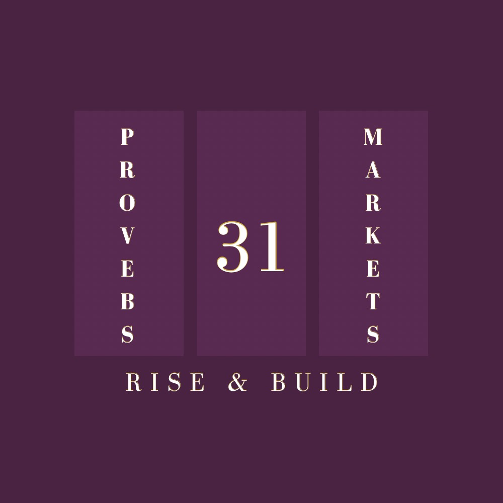

Bible fill-in-the-blank
“Give her of the fruit of her hands; and let her own works praise her in the.”
PROVERBS 31:31 · KJV
No peeking — answer in the comments 👇@proverbs31market

Now accepting applications
Meet the visionary
Founder · Proverbs 31 Marketplace
Proverbs 31 Marketplace presents
Shop hand-selected women-owned brands in art, beauty, clothing, food and more. All are welcome.
DATE ANNOUNCING SOON
GET NOTIFIED · LINK IN BIOInside the collective
@proverbs31market
Sponsors · Venues · Brands
It’s here
P31MARKET.COM
SHOP · CURATORS · MARKET DATES
Sunday encouragement
“Strength and honour are her clothing; and she shall rejoice in time to come.”
PROVERBS 31:25